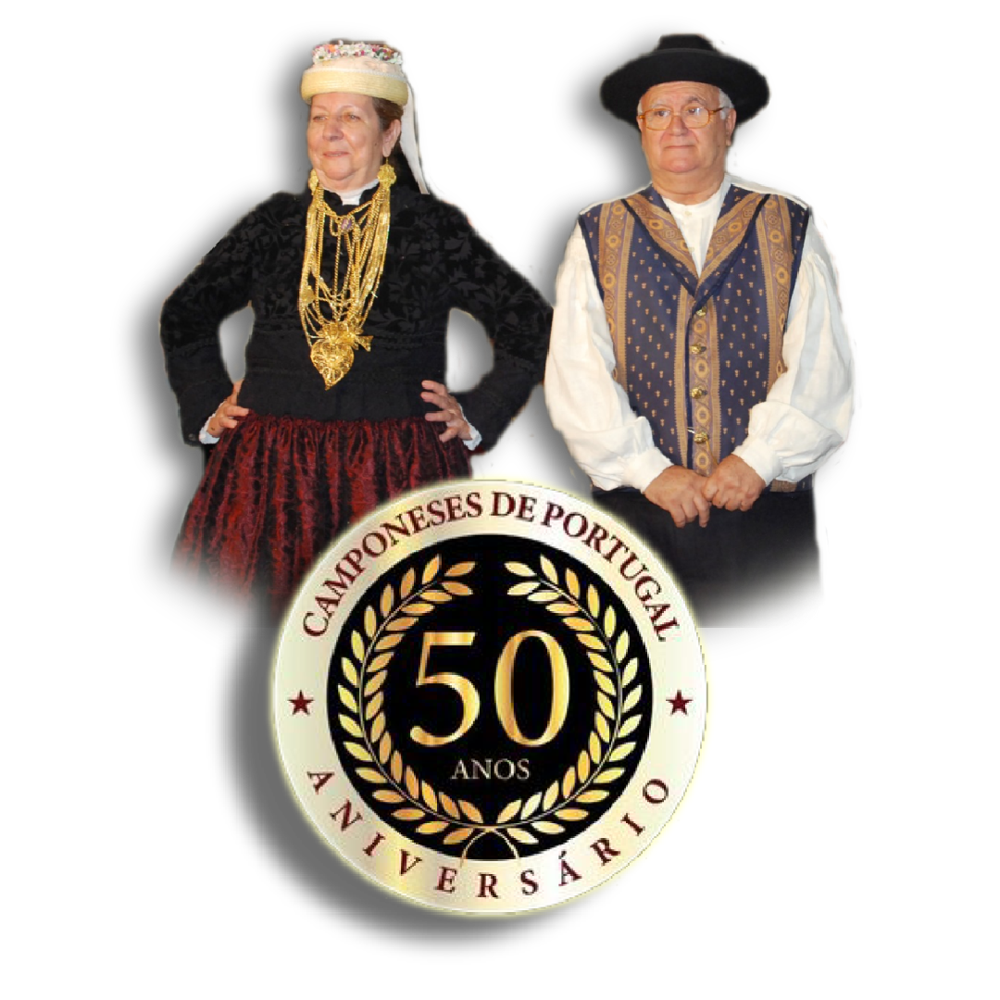
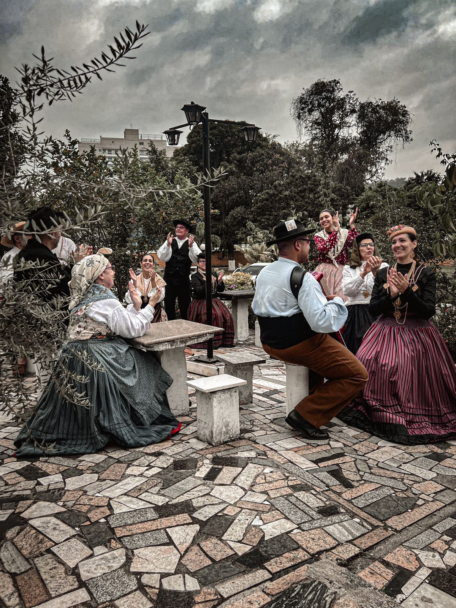
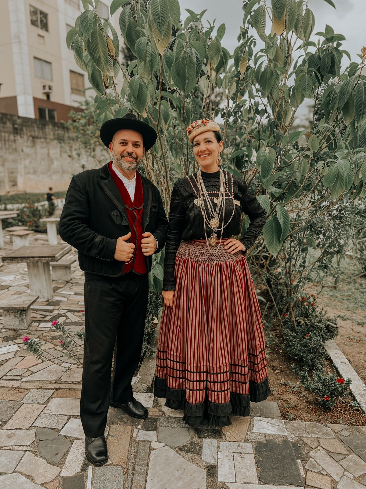
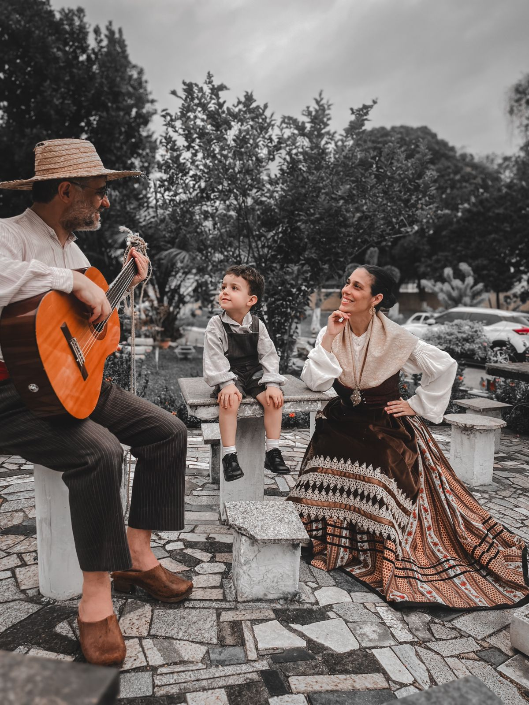
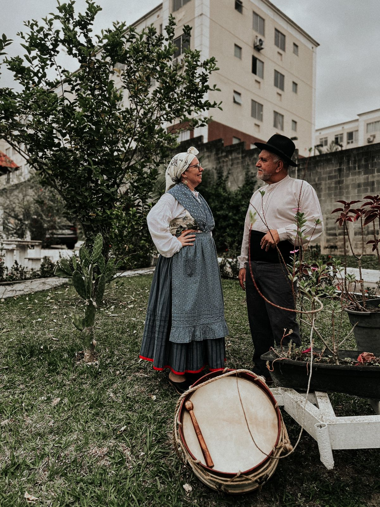

Rancho Folclórico Camponeses de Portugal
Home
Sobre nós
História
Eventos
Cultura
Fale conosco
Rancho Folclórico
Camponeses de Portugal
Há 50 anos preservando as tradições portuguesas.
Sobre nós

Fotos Recentes
   